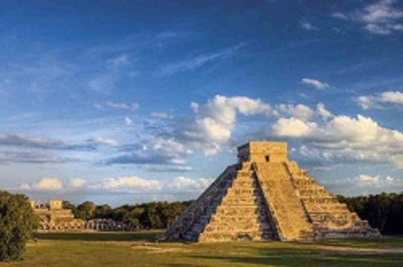
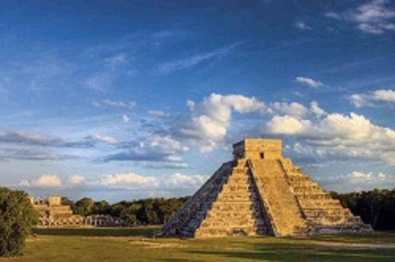

Civilizacion Maya
Durante el periodo clásico floreció en los bosques tropicales de Mesoamérica una de las culturas más asombrosas de la historia de la humanidad la cultura maya.
La sociedad de la cultura maya presenta rasgos peculiares que la hacen diferente de las otras sociedades mesoamericanas. Estos elementos distintivos son: el empleo de una escritura jeroglífica compuesta por más de 700 signos.Así definida, la subárea cultura maya comprende el territorio de los actuales Estados mexicanos de
Yucatán, Campeche y Quintana Roo, parte de los de Tabasco y Chiapas, los Departamentos guatemaltecos de Petén e Izabal, el noroeste de Honduras, y Belice.

Estos elementos distintivos son: el empleo de una escritura jeroglífica compuesta por más de 700 signos.Así definida, la subárea cultura maya comprende el territorio de los actuales Estados mexicanos de
Yucatán, Campeche y Quintana Roo, parte de los de Tabasco y Chiapas, los Departamentos guatemaltecos de Petén e Izabal, el noroeste de Honduras, y Belice.
